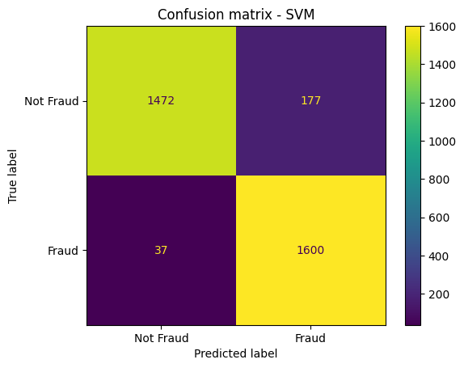
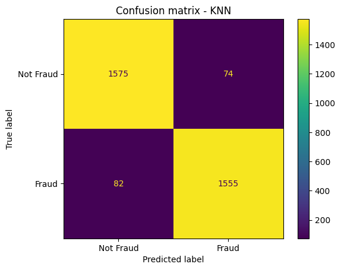

Logistic Regression Confusion Matrix

Accuracy Score : 84.99695678636641
Support Vector Machine Confusion Matrix

Accuracy Score : 93.48752282410226
K-Nearest Neighbour Confusion Matrix

Accuracy Score : 95.25258673158856
Accuracy Score : 84.99695678636641
Accuracy Score : 93.48752282410226
Accuracy Score : 95.25258673158856
Accuracy Score : 98.60012172854535
Accuracy Score : 98.87401095556908
Among all algorithms, the `Random Forest` algorithm gives the best results in terms of accuracy, precision, and recall. So,we used it as our final model.